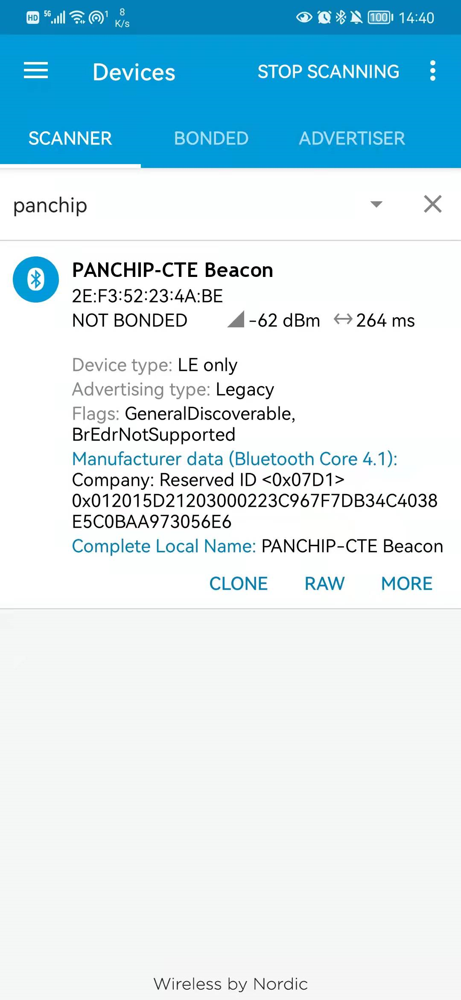

BLE Panchip-CTE Beacon¶
2 环境要求¶
board:
pan107uart (option): 显示串口log
4 演示说明¶
烧录完成后，设备自动启动蓝牙广播，可以在手机nRF Connect或抓包工具上获取如下信息：
Advertising Type: ADV_SCAN_IND
Advertising Interval Time: 30ms
Company ID: (Shanghai Panchip Microelectronics Co., Ltd (0x07D1)
Device Name: PANCHIP-CTE Beacon
下图是 nRF Connect(Android) 扫描到设备后显示的信息。

PANCHIP-CTE Beacon 手机端信息显示界面¶
5 广播数据¶
广播数据包含两个 AD Element，如下表。
Index (Byte) |
Data |
Name |
Description |
|---|---|---|---|
0 |
0x02 |
Length |
Length of this AD Element 1 |
1 |
0x01 |
AD Type |
Flags |
2 |
0x06 |
Data |
BT_LE_AD_GENERAL, BT_LE_AD_GENERAL |
3 |
0x1B |
Length |
Length of this AD Element 2 |
4 |
0xFF |
AD Type |
Manufacturer Specific Data |
5:6 |
0x07D1 |
Company ID |
Shanghai Panchip Microelectronics Co., Ltd |
7 |
0x01 |
Packet ID |
定位包ID，用于区分同一厂家的不同设备，如标签、手环、IOS微信小程序和安卓微信小程序等，标签使用0x01。 |
8 |
0x20 |
Device Type |
设备类型 |
9 |
0x15 |
Header |
Carries information of Tag’s TX rate, TX power and ID type |
10:16 |
0xD2, 0x12, 0x03, 0x00, 0x02, 0x23, |
Tag ID |
用于区分不同的标签 |
17 |
0xC9 |
Checksum |
CRC-8 [Device Type, Header, Tag ID] |
18:31 |
0x67, 0xF7, 0xDB, 0x34, 0xC4, 0x03, 0x8E, 0x5C, 0x0B, 0xAA, 0x97, 0x30, 0x56, 0xE6 |
DF Field |
该字段为辅助定位使用的固定字节。该段内容需保证空中抓取到的是固定频率的电磁波。根据2402MHz广播通道的白化算法规则和蓝牙先发送低字节的低比特的特性。 |